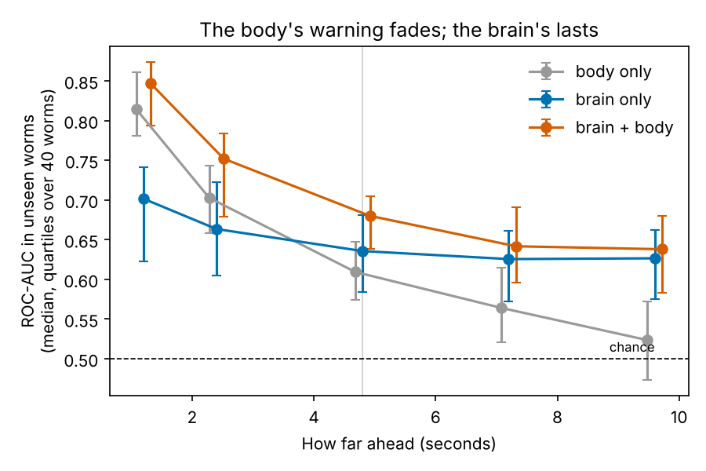
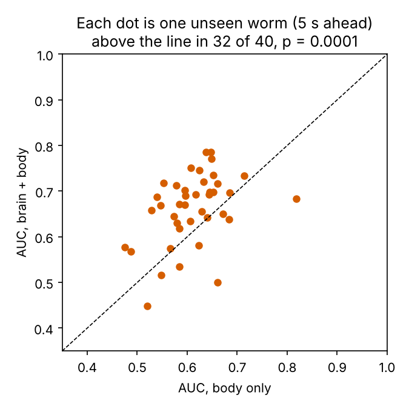

While a C. elegans worm crawls forward, does its brain show that it is about to reverse, beyond what its body already shows, in an animal the model has never seen?

The body predicts well at the last second (the worm slows first), but its warning fades by about 10 s. The brain's lasts: its information about an upcoming reversal builds up before anything shows in the body.
With the same number of alarms, body signals catch more reversals at the last moment; with at least 3 s of warning required, the brain model catches more in 27 of 40 worms.

The plan was committed to git before any results; the one deviation is logged.
| Check | Result |
|---|---|
| Brain recording slid out of sync with behaviour | effect gone (0.61) |
| Stricter scaling (first 3 min only) | 0.68, 33/40 |
| Stronger model (boosted trees) | 0.70 vs 0.65 |
| Decoding "reversing now?" (sanity) | 0.89 |
| Fresh clone, download and re-run | identical |